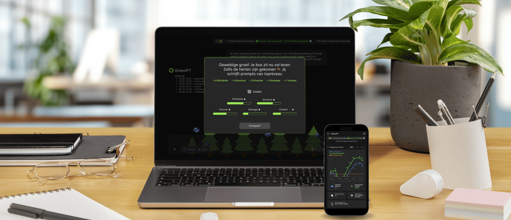
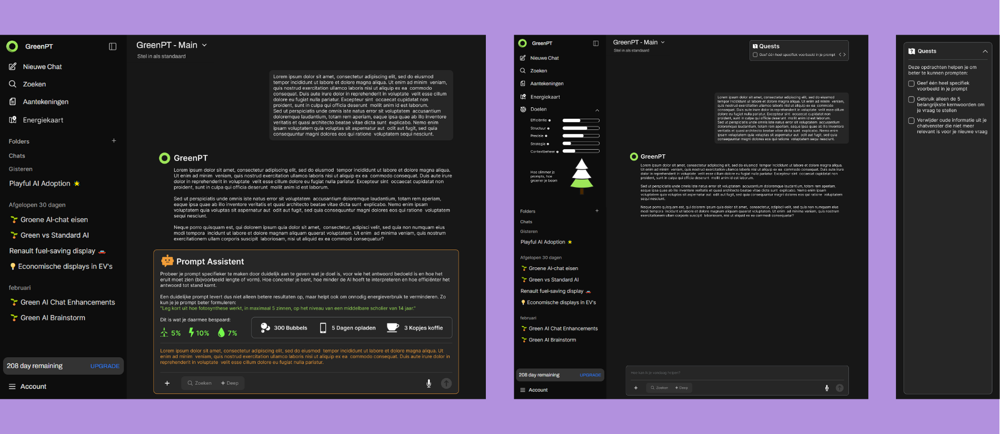
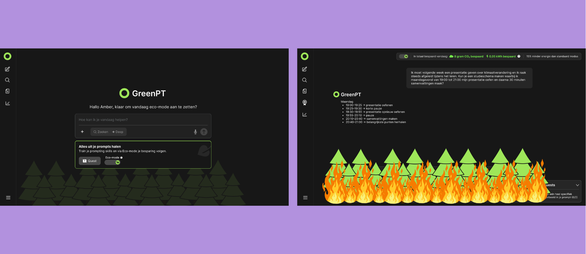
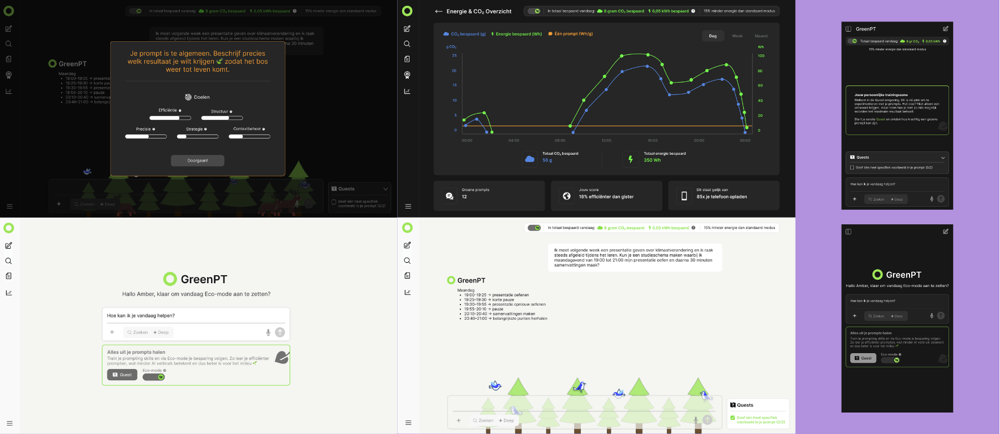

GreenPT was my graduation project, a 6 month project in which I worked on making the environmental impact of AI more understandable through data visualisation. The goal was to visualise the data behind AI usage in a way that would help people understand its impact and become more aware of how they use AI.
Development Progress

Initial Design
At the start of the project, I was still exploring what form
GreenPT should take. I considered different concepts,
including a chatbot, a Prompt Assistant and a quest-based
experience. I experimented with many different ideas by
sketching, prototyping and discussing them with the target
audience, coaches and other people involved in the project.
This resulted in many iterations, as I wanted to
understand what would actually be useful and engaging for the
target audience. Rather than deciding on one concept straight
away, I used the feedback and conversations to gradually
narrow down the possibilities and find a direction that would
encourage people to learn about more sustainable AI use.

Development
Through my research and conversations with the target
audience, it became clear that a quest-based experience was
more interesting than a Prompt Assistant. A Prompt Assistant
could provide useful tips, but users could easily ignore them
without really changing their behaviour. The quest, on the
other hand, encouraged users to actively learn by doing. This
became the foundation for the final concept. Users complete
different challenges to learn how to write more efficient
prompts, with a points and level system to make the experience
more engaging.
I also introduced the forest as an interactive
visual element. The forest grows as users make progress, while
less effective choices cause it to gradually decline. Users do
not lose points when they make a less effective choice;
instead, they receive feedback and tips to help them improve.
Results

The final concept combines the quest system, points and levels, and an interactive forest that reflects the user's progress. Completing challenges helps users learn how to write more efficient prompts, while the forest visually responds to their performance. I also developed both dark and light modes and created a mobile version of the experience. This allowed me to explore how the visual style and interactions could adapt to different screens and user contexts. The result is an interactive experience that makes sustainable AI use more engaging by encouraging users to learn through doing.
Reflections
This project taught me that visualising data is not only about
making information look appealing. The way information is
presented strongly influences how people understand and interact
with it. One of the biggest challenges was finding the right
balance between storytelling, visual design and factual
information. I initially wanted to include many different
elements, but through iteration and feedback I learned to focus
on the parts that contributed most to the user's
understanding of the concept. The project also strengthened my
skills in interaction design, prototyping and visualising
complex information.
Looking back, I didn't have enough time to also code the
project into a working prototype. The research and interviews
took more time than I initially expected, leaving less time for
development. I would have loved to take the concept one step
further and actually build it, so that is definitely something I
would do if I had the opportunity to continue working on
GreenPT.